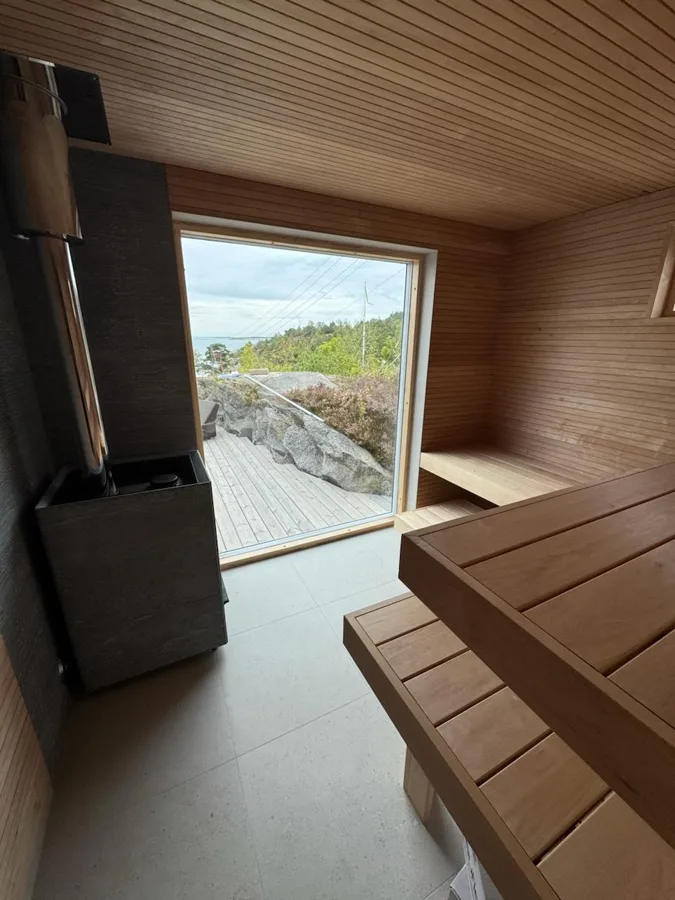
Hantverk att
titta närmare på.
Små detaljer och stora förändringar. Här är ett urval av de miljöer vi har fått förtroendet att bygga och förnya.
Visar 15 projekt
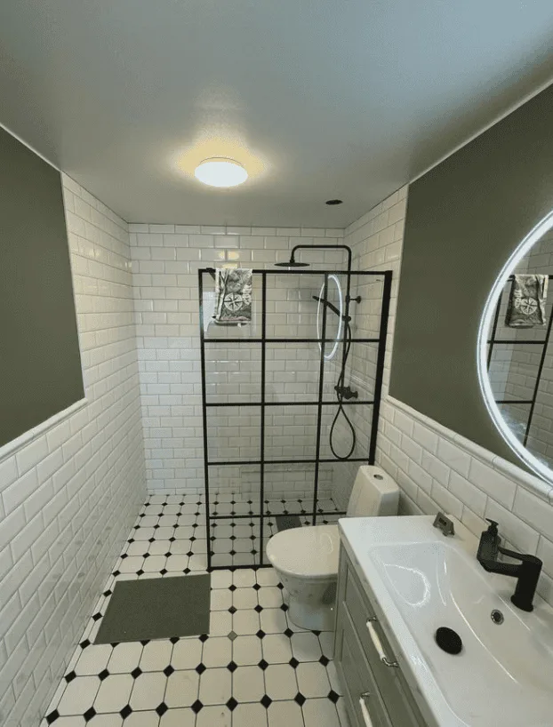
Ett nytt badrum i Frillesås
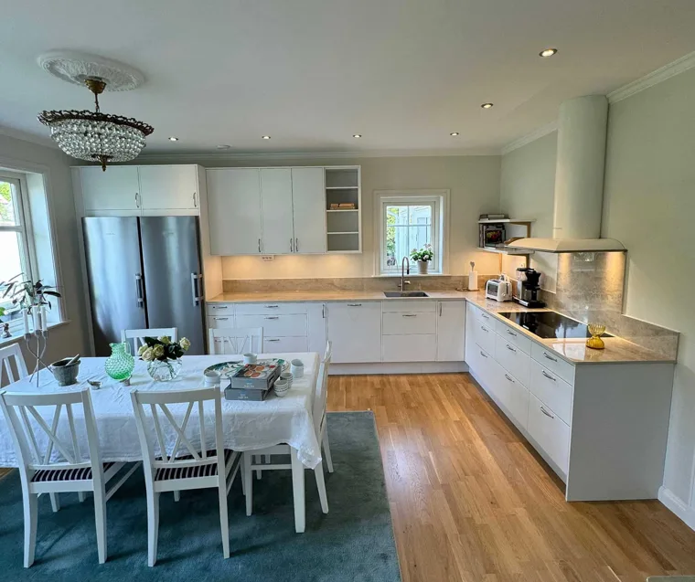
Köket mitt i vardagen
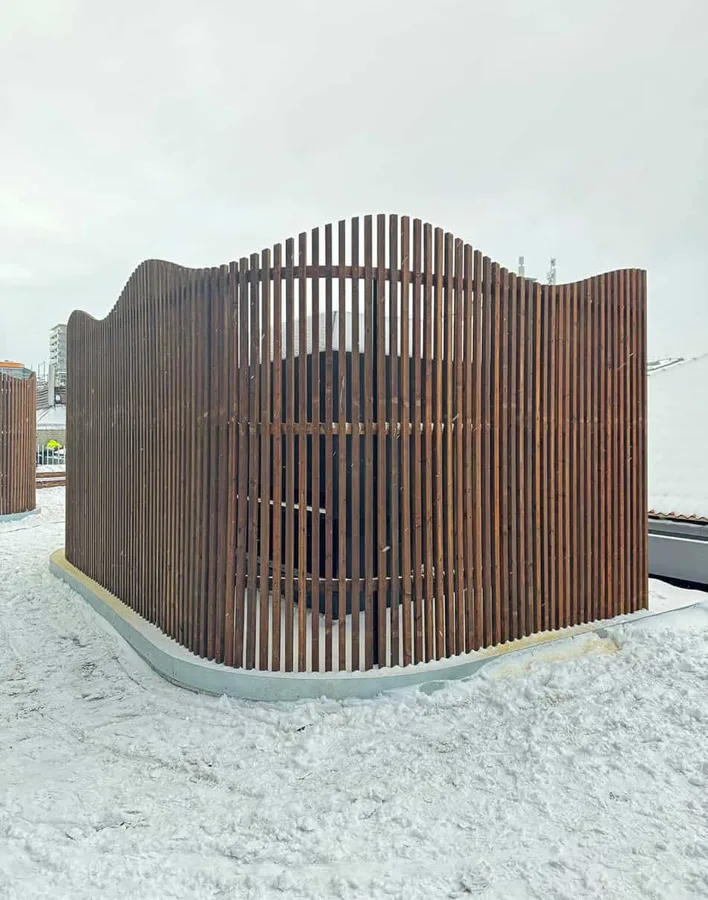
Teknik, klädd i trä
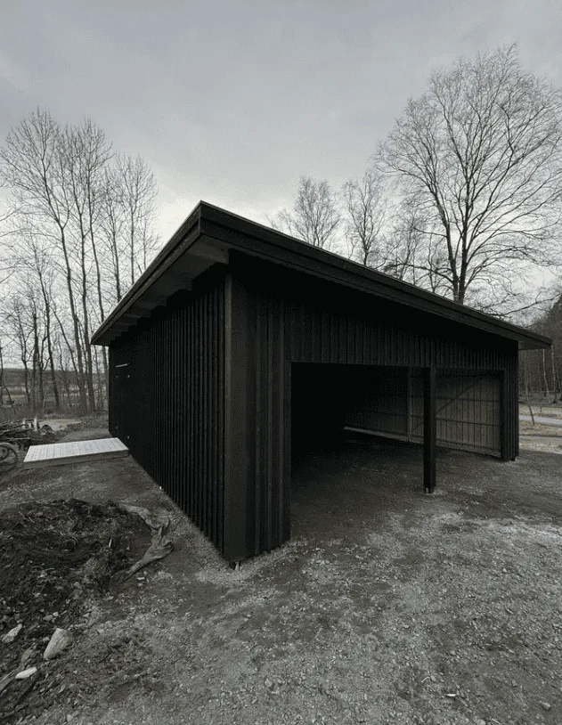
Skydd för bilen i Åskloster
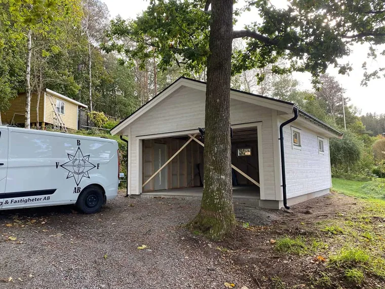
Ett nytt garage i Lindome
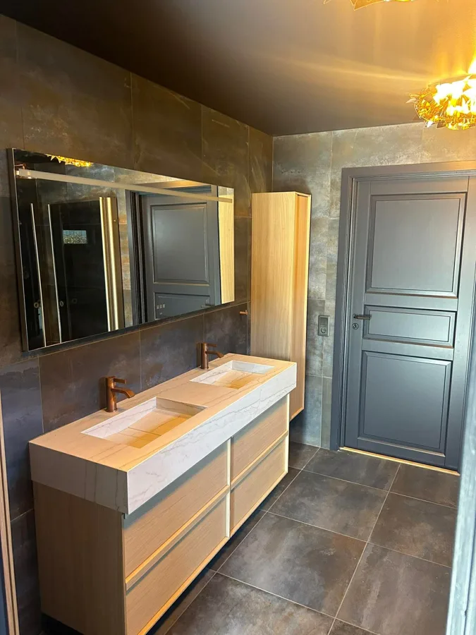
Varma detaljer. Mörka toner.
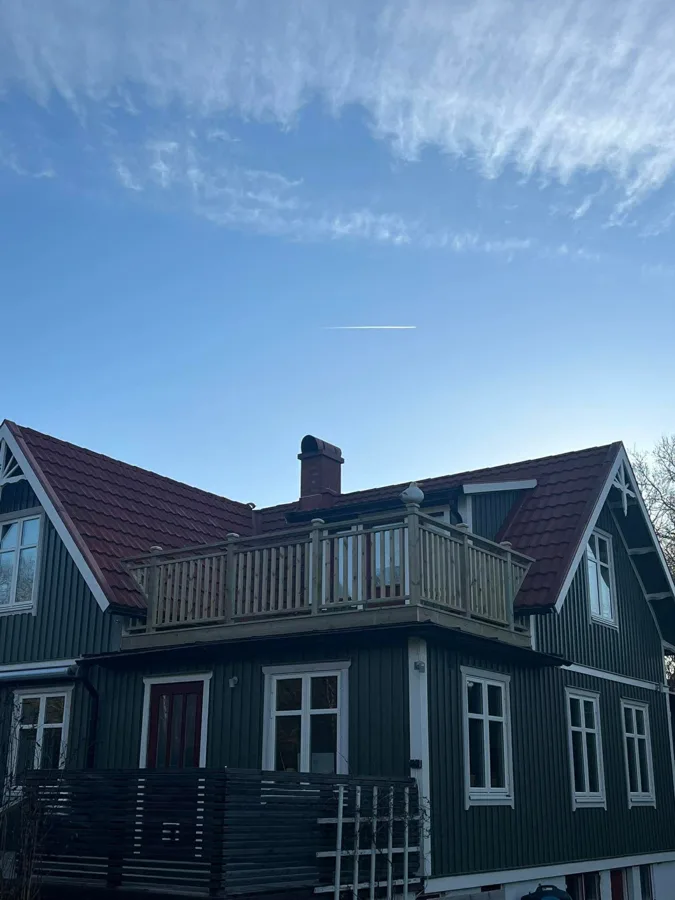
Utsikt från en ny terrass
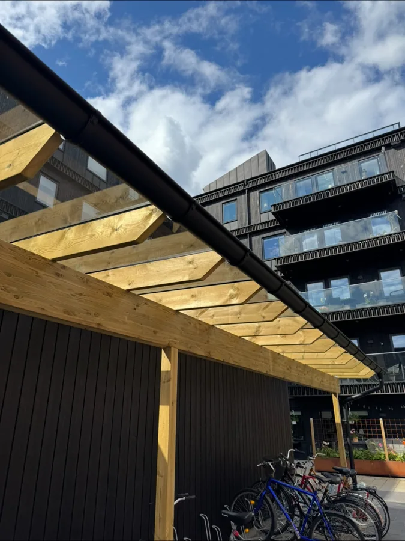
Ljusinsläpp och väderskydd
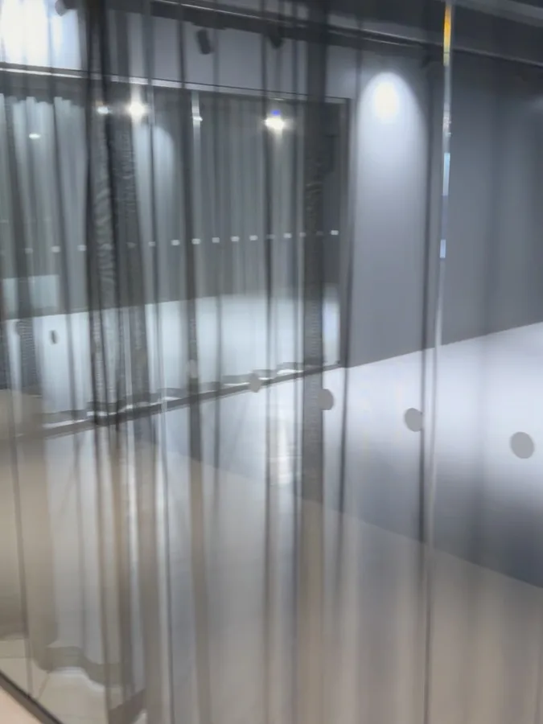
Nya leveransplatser för Bilia
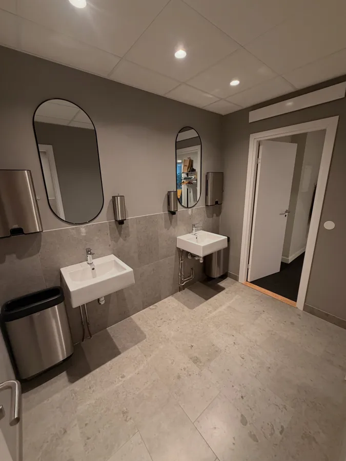
Nya rum under semesterveckorna
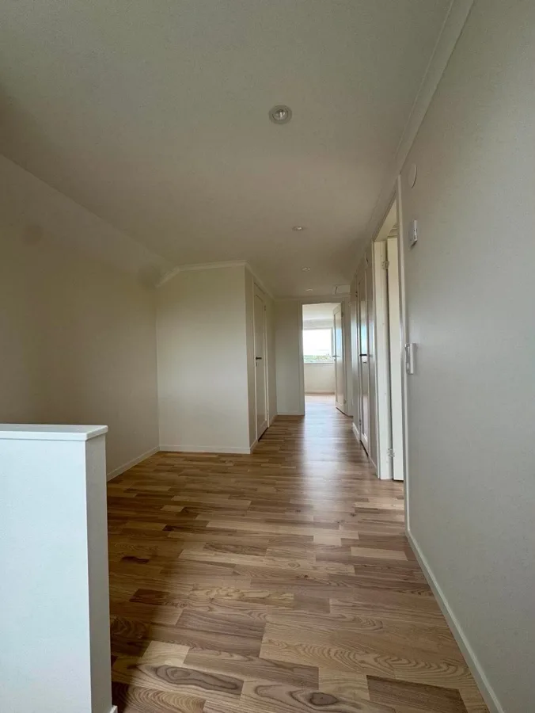
Ett ljusare kapitel på övervåningen

Ny funktion, samma stugkänsla
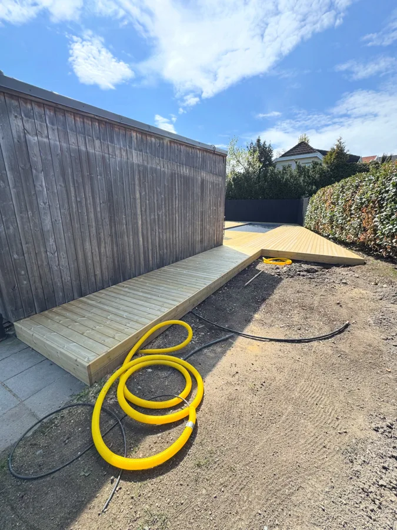
Mer rum för sommaren
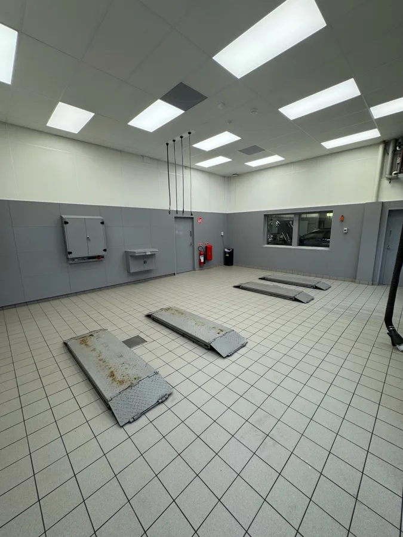
Från industrilokal till besiktningshall
Vad vill du
bygga vidare på?
En tydlig idé eller bara en tanke.
Berätta så tar vi det därifrån.